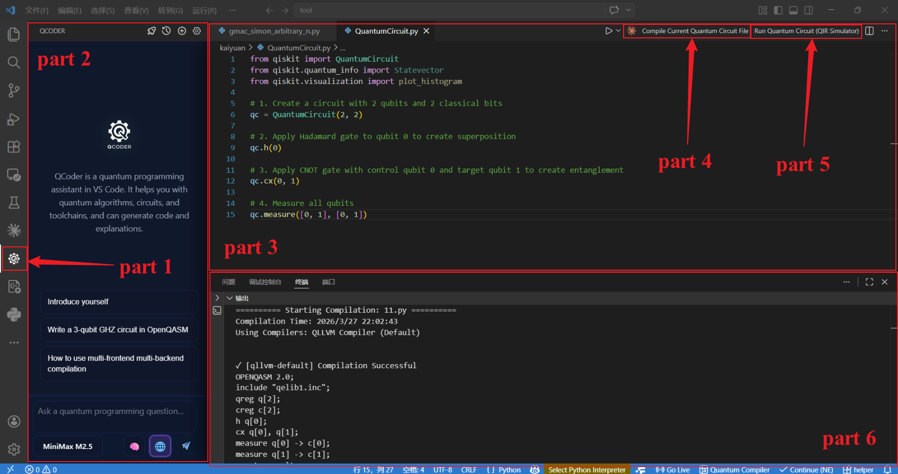

使用
本部分主要介绍如何使用QLLVM编译量子线路，以及编译参数的详细说明。
使用示例
使用插件
云端使用
{kind=link}

VScode插件界面展示
区域 |
功能说明 |
|---|---|
① Qcoder 侧边栏 |
点击即可使用 Qcoder 智能编程助手 |
② Qcoder 主界面 |
智能交互界面 |
③ 代码界面 |
用于展示量子程序 |
④ 编译键 |
点击即可对代码界面或选中的量子程序进行编译 |
⑤ 运行键 |
点击即可运行代码界面或选中的量子程序 |
⑥ 输出界面 |
输出编译好的量子线路以及各项参数 |
Quantum Circuit Composer
Quantum Circuit Composer 是一款 Visual Studio Code 插件，主要功能包括：
多编译器支持：可同时配置多个编译器（自研 QLLVM、IBM Qiskit、本源 QPanda），一键并行编译，并自动生成结果对比表格。
多前端输入：支持 QASM、Qiskit Python 代码、QPanda Python 代码、OriginIR、QCIS 等多种输入格式，统一转换为 QASM 后进行编译。
远程/本地编译：默认使用远程服务器编译（无需本地安装编译器），也可切换为本地编译。
QIR 模拟器：直接在插件内运行 QIR 模拟器，查看测量结果统计。
统计对比：编译完成后自动提取各编译器的门数、两比特门数、深度，并生成对比表格。
图形化设置：通过设置面板管理编译器配置，轻松启用/禁用、编辑参数。
快速开始：
安装插件
在 VSCode 扩展商店中搜索 “Quantum Circuit Composer” 并安装。
安装后，状态栏会出现一个电路板图标，点击可打开设置面板。
编写量子电路
新建一个文件，支持 .qasm`（OpenQASM）、.py`（Qiskit/QPanda 代码）、.originir、.qcis 等。
例如，一个简单的 Bell 态 QASM 文件：
OPENQASM 2.0; include "qelib1.inc"; qreg q[2]; creg c[2]; h q[0]; cx q[0],q[1]; measure q[0] -> c[0]; measure q[1] -> c[1];
编译文件
右键单击文件，选择 “编译当前量子电路文件”。
或打开设置面板，点击顶部的 “▶ 选择文件进行编译”。
插件将使用已启用的所有编译器并行编译，并在输出通道中显示结果和统计对比表格。
运行 QIR 模拟器
在设置面板的编译器列表中，找到 QLLVM 编译器，点击其右侧的 “▶ 运行模拟器” 按钮。
在弹出的输入框中输入 shots（运行次数）和随机种子（可选）。
模拟完成后，输出通道会显示测量结果统计。
Qcoder
面向量子计算学习与开发的 VS Code 侧栏 AI 助手
QCoder 将大模型对话嵌入编辑器侧栏，聚焦量子算法、量子电路与工具链问题，而不是通用闲聊。允许用户为阿里云、DeepSeek 或**自定义 SCNet 模型**配置自己的 API Key。
快速开始：
安装
在 VS Code 扩展视图搜索安装，或使用 Install from VSIX… 安装组织分发的 .vsix。
配置 API Key（按你实际使用的模型）
打开命令面板（Ctrl+Shift+P / Cmd+Shift+P）：
QCoder: 设置 QCoder Qwen API Key：阿里云百炼（自定义 Qwen 模型）
QCoder: 设置 QCoder DeepSeek API Key：DeepSeek（自定义）
QCoder: 设置 QCoder SCNet API Key：仅用于**自定义添加的 SCNet 模型**，与内置三条官方模型无关
仅使用**内置三条 SCNet 模型**时，可以不配置 Qwen / DeepSeek / 自定义 SCNet Key。
打开聊天
点击活动栏 QCoder 图标打开侧栏聊天，或运行 QCoder: 与量子编程小助手聊天。
侧栏设置
标题栏或界面内可打开 设置：管理自定义模型列表、界面语言、以及（在支持的构建中）与模型测试相关的 Key 写入。
使用命令行
编译纯量子程序
编译OpenQASM文件
基本编译:
# Using qllvm
qllvm test.qasm -qrt nisq -qpu qasm-backend -O1
# Output: test_compiled.qasm
指定输出路径:
qllvm test.qasm -qrt nisq -qpu qasm-backend -O0 -o folder/try
# Output: folder/try.qasm
指定基础门组:
qllvm test.qasm -qrt nisq -qpu qasm-backend -O1 -o folder/try \
-basicgate=[rx,ry,rz,h,cx]
带后端拓扑(SABRE 映射):
qllvm test.qasm -qrt nisq -qpu qasm-backend -O1 \
-qpu-config backend.ini -initial-mapping '[0,1,2]' \
-sabre-cpp
Bell态示例
创建bell.qasm:
OPENQASM 2.0;
include "qelib1.inc";
qreg q[2];
creg q_c[2];
h q[0];
CX q[0], q[1];
measure q[0] -> q_c[0];
measure q[1] -> q_c[1];
编译并检查输出:
qllvm bell.qasm -qrt nisq -qpu qasm-backend -O1
cat bell_compiled.qasm
直接调用 qllvm-compile
# Without SABRE
qllvm-compile test.qasm -internal-func-name test \
-emit-backend=qasm-backend -output-path=test_out.qasm
# With SABRE (linear chain 0-1-2)
qllvm-compile test.qasm -internal-func-name test \
-emit-backend=qasm-backend -output-path=test_sabre.qasm \
-sabre-coupling-map="0,1;1,2"
打印 MLIR / QIR
qllvm test.qasm -emitmlir -qrt nisq -qpu qasm-backend -O1
qllvm test.qasm -emitqir -qrt nisq -qpu qasm-backend -O1
后端拓扑配置示例
backend.ini 或 qpu_config_chain3.txt:
# Linear chain: 0-1-2
connectivity = [[0, 1], [1, 2]]
QIR Runner 后端配置示例
输出 LLVM 位码 (.bc) 供 QIR Runner 模拟器加载。qllvm 内置 QirRunnerCompat 自动适配 qir-runner 的 QIR base profile（__quantum__rt__initialize 签名、__body 后缀、mz 结果索引等）。
# 1. 安装 qir-runner (conda qllvm 环境)
conda activate qllvm
pip install qirrunner
# 2. 用 qllvm-compile 生成 .bc
qllvm-compile bell.qasm -qrt nisq -qpu qir-runner -O1 \
-emit-backend=qir-runner -output-path=bell.bc
# 3. 用 qir-runner 运行
qir-runner -f bell.bc -s 5
qir-runner 输出格式说明
每次 shot 的输出结构：
行 |
含义 |
|---|---|
START |
一次 shot 开始 |
METADATAtEntryPoint |
入口点元数据 |
RESULTt0 或 RESULTt1 |
各 qubit 的测量结果（按测量顺序） |
ENDt0 |
该 shot 结束 |
示例（Bell 电路 5 shots）：
START
METADATA EntryPoint
RESULT 0
RESULT 0
END 0
START
METADATA EntryPoint
RESULT 1
RESULT 1
END 0
...
qir-runner 命令行参数
参数 |
说明 |
默认值 |
|---|---|---|
-f, –file <PATH> |
QIR 位码文件路径（必需） |
|
-s, –shots <NUM> |
模拟 shot 次数 |
1 |
-r, –rngseed <NUM> |
随机数种子（可复现） |
随机 |
-e, –entrypoint <NAME> |
入口函数名 |
EntryPoint |
输出为 Qiskit 风格 counts
使用 scripts/qir_runner_counts.py 将原始输出转换为 Qiskit 风格的 get_counts() 字典：
# 管道方式
qir-runner -f bell.bc -s 100 | python3 scripts/qir_runner_counts.py -
# 直接指定 bc 与参数
python3 scripts/qir_runner_counts.py bell.bc -s 100 -r 42
输出示例（Bell 态）：{‘00’: 48, ‘11’: 52}
协同测试脚本：./scripts/test_qllvm_qirrunner.sh
.bc 为标准 LLVM 位码，可被 [qir-alliance/qir-runner](https://github.com/qir-alliance/qir-runner) 等工具加载（需 Python 3.9+）。
编译经典-量子混合程序
如果需要编译经典-量子混合程序，需安装 qir-runner（pip install qirrunner）以及下列依赖
依赖：Clang（支持 -x cuda）、CUDA Toolkit、qir-runner（pip install qirrunner）。
Ubuntu apt 安装 CUDA：运行 bash scripts/install_cuda_apt.sh 可自动安装 nvidia-cuda-toolkit 并创建 Clang 兼容目录（~/.qllvm/cuda-apt-compat）。详见 examples/hybrid_cuda/README.md。
支持将 C++ 主程序与 QASM 量子电路混合编译为单一可执行文件：
# 混合编译（qir-qrt-stub 桩实现）
qllvm main.cpp circuit.qasm -o hybrid_app
# 示例位于 examples/hybrid/
# bell
qllvm examples/hybrid/main.cpp examples/hybrid/bell.qasm -o hybrid_bell
./hybrid_bell
# simon
qllvm examples/hybrid/main_gmac_simon.cpp examples/hybrid/gmac_simon.qasm -o hybrid_simon
./hybrid_simon
#vqe
qllvm examples/hybrid/main_vqe.cpp examples/hybrid/vqe.qasm -o hybrid_vqe
./hybrid_vqe
# 具有最优解的qaoa
qllvm examples/hybrid/main_qaoa.cpp examples/hybrid/qaoa.qasm -o hybrid_qaoa
./hybrid_qaoa
# 非最优解的qaoa
qllvm examples/hybrid/main_qaoa_suboptimal.cpp examples/hybrid/qaoa_suboptimal.qasm -o hybrid_qaoa_suboptimal
./hybrid_qaoa_suboptimal
# 混合编译 + qir-runner 模拟（生成 exe 与 .bc）
qllvm main.cpp bell.qasm -qpu qir-runner -o hybrid_bell -O1
# 运行（需 qir-runner 在 PATH 中）
./hybrid_bell -shots 10
工作流程：QASM → QIR .bc (qir-runner) + C++ 编译 → 可执行文件在运行时间接调用 qir-runner 子进程模拟量子电路。
协同测试脚本：./scripts/test_hybrid_qirrunner.sh
详见 examples/hybrid/README.md。
支持将 C++ 主程序、CUDA 内核与 QASM 量子电路混合编译为单一可执行文件（需 CUDA 环境）：
cd examples/hybrid_cuda
# 编译（-cuda-arch 指定 GPU 架构，如 sm_75、sm_86）
qllvm main.cpp kernel.cu circuit.qasm -o hybrid_app \
-cuda-arch sm_75 \
-cuda-path /usr/local/cuda
# 若 nvcc 在 PATH 中，可省略 -cuda-path，将自动推导
qllvm main.cpp kernel.cu circuit.qasm -o hybrid_app -cuda-arch sm_86
# 运行
./hybrid_app -shots 1024
Warning
QASM 程序当前仅支持 OPENQASM 2.0 格式规范。
编译参数说明
本教程将介绍qllvm编译参数的详细说明。
驱动程序（qllvm）参数
参数 |
说明 |
示例 |
|---|---|---|
-O0 |
不进行编译优化 |
|
-O1 |
使用固定优化遍序列 |
|
-basicgate |
指定基础门组 |
|
-qrt |
指定设备类型 |
|
-qpu |
指定后端类型 |
|
-qpu-config |
指定后端拓扑结构（耦合图） |
|
-emitmlir |
打印 MLIR 程序 |
|
-emitqir |
打印 QIR 程序 |
|
-customPassSequence |
指定优化遍序列文件 |
|
-o |
指定输出路径及文件名 |
|
-placement |
指定映射方法 |
|
-initial-mapping |
指定初始比特映射 |
|
-sabre-cpp |
在 LLVM IR 阶段使用 C++ SABRE（需配合 -initial-mapping 和 -qpu-config） |
|
-circuit-state |
打印电路状态（深度、门数） |
|
-pass-count |
打印各 Pass 执行次数 |
|
-v / –verbose |
开启详细输出 |
|
-cuda-arch |
为混合 CUDA 指定 GPU 架构 |
|
-cuda-path |
为混合 CUDA 指定 CUDA 安装路径（可选，默认使用 CUDA_PATH 或 nvcc 推导） |
|
常用基础门组:
[rx,ry,rz,h,cz]: 默认[rx,ry,rz,h,cx]: 使用 CX[su2,x,y,z,cz]: 用于测量和控制系统
qllvm-compile 参数
参数 |
说明 |
|---|---|
<input.qasm> |
positional,输入 OpenQASM 文件 |
-internal-func-name |
生成的内核函数名 |
-no-entrypoint |
不生成 main 入口 |
-O0 |
优化等级 0 |
-O1 |
优化等级 1 |
-qpu |
目标量子后端 |
-qrt |
量子执行模式（nisq/ftqc） |
-emitmlir |
打印 MLIR |
-emitqir |
打印 QIR |
-emit-backend |
指定发射后端（如 qasm-backend） |
-output-path |
输出文件路径 |
-output-ll |
输出 LLVM IR 路径（用于混合编译链接） |
-sabre-coupling-map |
SABRE 耦合图,边格式 0,1;1,2;2,3 |
-circuit-state |
打印电路深度和门数 |
-pass-count |
打印各 Pass 执行次数 |
-basicgate |
基础门组 |
-customPassSequence |
自定义 Pass 序列文件 |
-verbose-error |
出错时打印完整 MLIR |
–pass-timing |
Pass 耗时统计 |
–print-ir-after-all |
每 Pass 后打印 IR |
–print-ir-before-all |
每 Pass 前打印 IR |
CMake 构建参数
参数 |
说明 |
|---|---|
-DLLVM_ROOT |
LLVM 安装路径（含 MLIR） |
-DXACC_DIR |
可选依赖路径（antlr4/exprtk）；QASM-only 独立构建时设为空：-DXACC_DIR= |
-DCMAKE_INSTALL_PREFIX |
安装目录（默认 ~/.qllvm） |
-DQLLVM_QASM_ONLY_BUILD=ON |
启用 QASM-only 独立构建 |